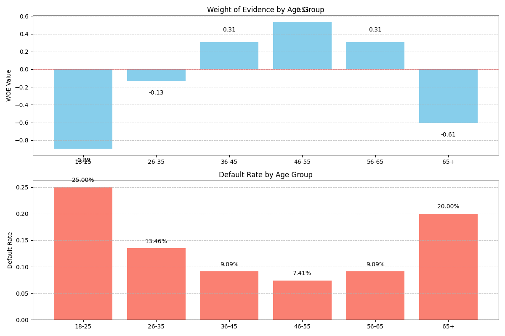

Weight of Evidence (WOE) and Information Value (IV)
The weight_of_evidence function calculates Weight of Evidence (WOE) and Information Value (IV), which are powerful techniques used in credit scoring and risk modeling to assess the predictive power of variables and transform them into a format suitable for logistic regression models.
Usage in Pypulate
from pypulate.credit import weight_of_evidence
# Calculate WOE and IV for a variable's bins
result = weight_of_evidence(
good_count=[100, 80, 50, 30, 10], # Count of non-default cases in each bin
bad_count=[5, 10, 15, 20, 25] # Count of default cases in each bin
)
# Access the results
woe_values = result["woe"]
iv = result["information_value"]
iv_strength = result["iv_strength"]
Parameters
| Parameter | Type | Description | Default |
|---|---|---|---|
good_count |
array_like | Count of good cases (non-defaults) in each bin | Required |
bad_count |
array_like | Count of bad cases (defaults) in each bin | Required |
min_samples |
float | Minimum percentage of samples required in a bin | 0.01 |
adjustment |
float | Adjustment factor for zero counts | 0.5 |
Return Value
The function returns a dictionary with the following keys:
| Key | Type | Description |
|---|---|---|
woe |
list | Weight of Evidence values for each bin |
information_value |
float | Information Value, measuring the overall predictive power |
iv_strength |
str | Qualitative assessment of the IV strength |
good_distribution |
list | Distribution of good cases across bins |
bad_distribution |
list | Distribution of bad cases across bins |
small_bins |
list | Boolean flags indicating bins with too few samples |
Risk Level Classification
Information Value (IV) is typically categorized into predictive power levels:
| IV Range | Predictive Power |
|---|---|
| < 0.02 | Not predictive |
| 0.02 - 0.1 | Weak predictive power |
| 0.1 - 0.3 | Medium predictive power |
| 0.3 - 0.5 | Strong predictive power |
| > 0.5 | Very strong predictive power |
Comprehensive Example
Here's a complete example demonstrating how to calculate and analyze Weight of Evidence and Information Value:
from pypulate.credit import weight_of_evidence
import matplotlib.pyplot as plt
import numpy as np
# Sample data: Age bins and default counts
age_bins = ["18-25", "26-35", "36-45", "46-55", "56-65", "65+"]
non_defaults = [150, 450, 600, 500, 300, 200] # Good cases
defaults = [50, 70, 60, 40, 30, 50] # Bad cases
# Calculate WOE and IV
result = weight_of_evidence(non_defaults, defaults)
# Print the results
print("Weight of Evidence Analysis")
print("==========================")
print(f"Information Value: {result['information_value']:.4f}")
print(f"Predictive Power: {result['iv_strength']}")
print("\nBin Analysis:")
print(f"{'Age Bin':<10} {'Non-Defaults':<15} {'Defaults':<15} {'WOE':<10} {'Small Bin':<10}")
print("-" * 60)
for i, bin_name in enumerate(age_bins):
print(f"{bin_name:<10} {non_defaults[i]:<15} {defaults[i]:<15} {result['woe'][i]:>+.4f} {'Yes' if result['small_bins'][i] else 'No':<10}")
# Calculate default rates for comparison
default_rates = [d/(d+n) for d, n in zip(defaults, non_defaults)]
# Visualize WOE values
plt.figure(figsize=(12, 8))
# Create a subplot for WOE values
plt.subplot(2, 1, 1)
bars = plt.bar(age_bins, result['woe'], color='skyblue')
plt.axhline(y=0, color='r', linestyle='-', alpha=0.3)
plt.title('Weight of Evidence by Age Group')
plt.ylabel('WOE Value')
plt.grid(axis='y', linestyle='--', alpha=0.7)
# Add value labels on top of bars
for bar in bars:
height = bar.get_height()
plt.text(bar.get_x() + bar.get_width()/2.,
height + (0.1 if height >= 0 else -0.1),
f'{height:.2f}',
ha='center', va='bottom' if height >= 0 else 'top')
# Create a subplot for default rates
plt.subplot(2, 1, 2)
plt.bar(age_bins, default_rates, color='salmon')
plt.title('Default Rate by Age Group')
plt.ylabel('Default Rate')
plt.grid(axis='y', linestyle='--', alpha=0.7)
# Add value labels on top of bars
for i, v in enumerate(default_rates):
plt.text(i, v + 0.01, f'{v:.2%}', ha='center')
plt.tight_layout()
plt.show()
# Visualize distributions
plt.figure(figsize=(12, 6))
x = np.arange(len(age_bins))
width = 0.35
fig, ax = plt.subplots(figsize=(12, 6))
ax.bar(x - width/2, result['good_distribution'], width, label='Good Distribution')
ax.bar(x + width/2, result['bad_distribution'], width, label='Bad Distribution')
ax.set_xlabel('Age Group')
ax.set_ylabel('Distribution')
ax.set_title('Distribution of Good vs Bad Cases')
ax.set_xticks(x)
ax.set_xticklabels(age_bins)
ax.legend()
ax.grid(axis='y', linestyle='--', alpha=0.7)
plt.tight_layout()
plt.show()
# Calculate and visualize the contribution to IV
iv_contributions = [(g - b) * w for g, b, w in zip(
result['good_distribution'],
result['bad_distribution'],
result['woe']
)]
plt.figure(figsize=(10, 6))
plt.bar(age_bins, iv_contributions, color='green')
plt.title('Contribution to Information Value by Age Group')
plt.xlabel('Age Group')
plt.ylabel('IV Contribution')
plt.grid(axis='y', linestyle='--', alpha=0.7)
# Add value labels
for i, v in enumerate(iv_contributions):
plt.text(i, v + 0.001, f'{v:.4f}', ha='center')
plt.tight_layout()
plt.show()
Example Output
Weight of Evidence Analysis
==========================
Information Value: 0.2217
Predictive Power: Medium predictive power
Bin Analysis:
Age Bin Non-Defaults Defaults WOE Small Bin
------------------------------------------------------------
18-25 150 50 -0.8938 No
26-35 450 70 -0.1317 No
36-45 600 60 +0.3102 No
46-55 500 40 +0.5333 No
56-65 300 30 +0.3102 No
65+ 200 50 -0.6061 No
Visualizations
Weight of Evidence by Age Group
This visualization shows the WOE values for each age bin. Positive values indicate lower risk (fewer defaults than expected), while negative values indicate higher risk (more defaults than expected).

Default Rate by Age Group
This chart shows the actual default rate for each age group, providing context for the WOE values.
Distribution of Good vs Bad Cases
This bar chart compares the distribution of good cases (non-defaults) and bad cases (defaults) across the different age groups.
Contribution to Information Value
This visualization shows how much each bin contributes to the overall Information Value, helping identify which groups have the strongest discriminatory power.
Practical Applications
Weight of Evidence and Information Value are used for:
- Variable Selection: Identifying which variables have the strongest predictive power for credit scoring models
- Risk Segmentation: Creating meaningful risk segments based on variable characteristics
- Logistic Regression Preparation: Transforming categorical and continuous variables into WOE values for logistic regression
- Scorecard Development: Creating credit scorecards with optimal binning and variable transformation
- Model Validation: Assessing the predictive power of variables in existing models
Methodological Considerations
When calculating WOE and IV, several methodological issues should be considered:
- Binning Strategy: How to create optimal bins for continuous variables (equal width, equal frequency, or custom)
- Handling Zero Counts: Applying adjustments to avoid infinity values when a bin has zero good or bad cases
- Minimum Sample Size: Ensuring each bin has sufficient samples for reliable WOE calculation
- Monotonicity: Whether WOE values should be monotonic across ordered bins
- Outlier Treatment: How to handle extreme values that might distort WOE calculations
Limitations
Weight of Evidence and Information Value have several limitations:
- Univariate Analysis: They assess variables individually, not accounting for interactions
- Binning Dependency: Results can vary significantly based on the binning strategy
- Overfitting Risk: Excessive binning can lead to overfitting
- Interpretability Tradeoff: While WOE transformation improves model performance, it can reduce interpretability
- Population Stability: WOE values calculated on one population may not be valid for another